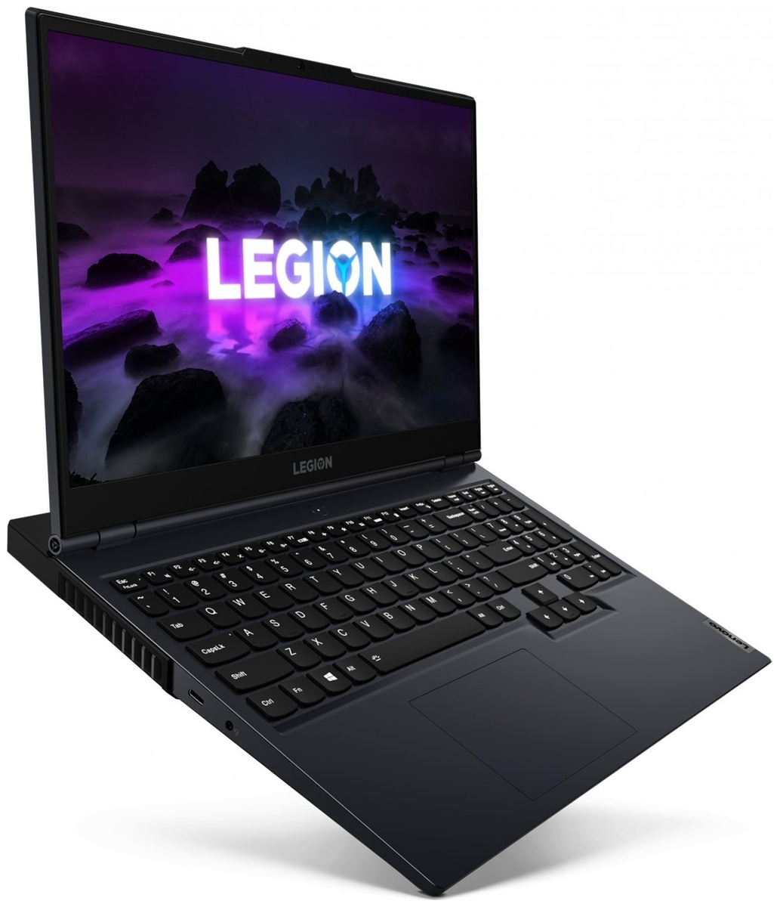
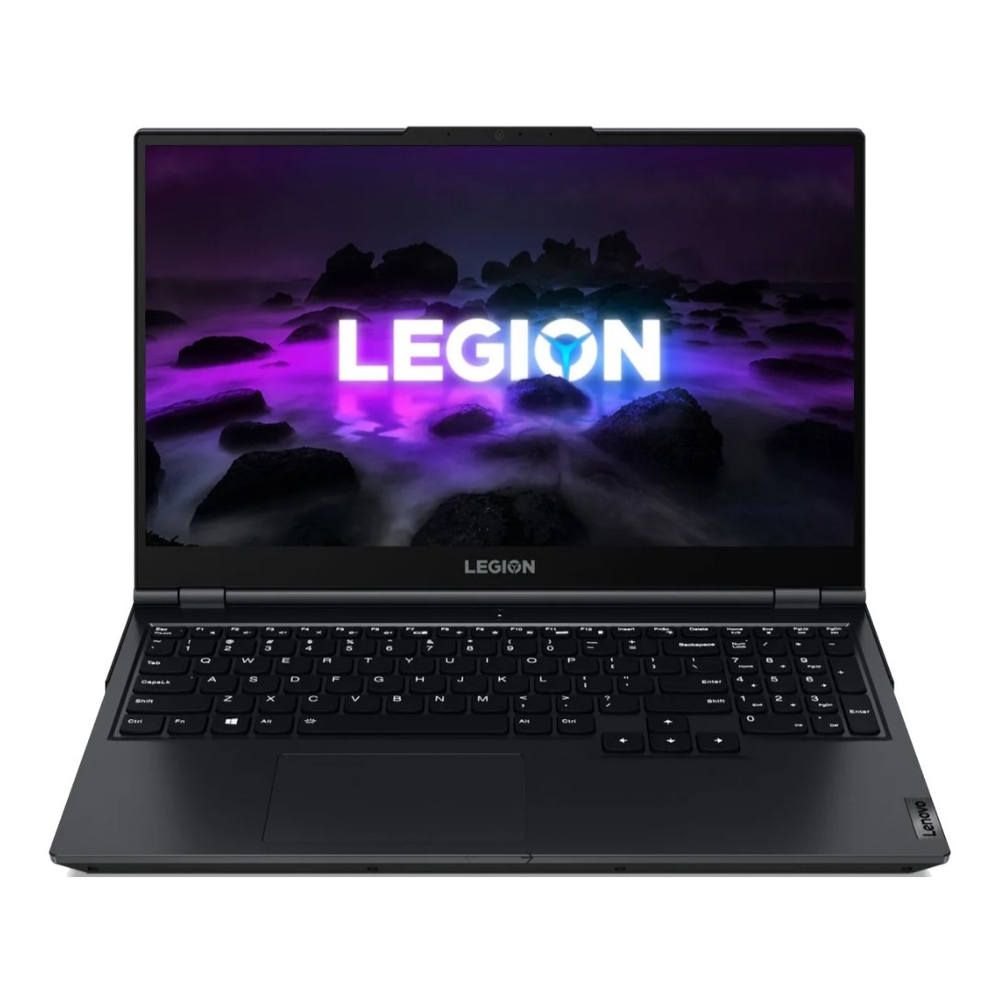
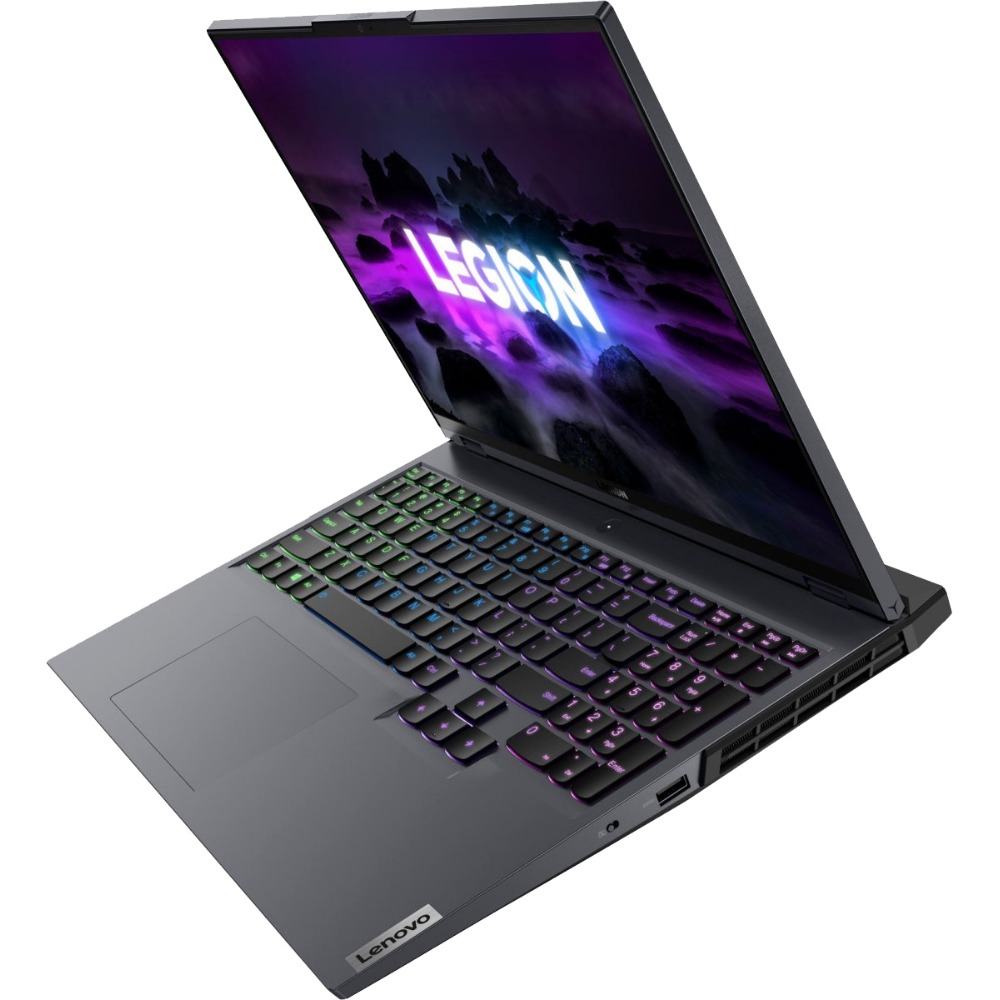
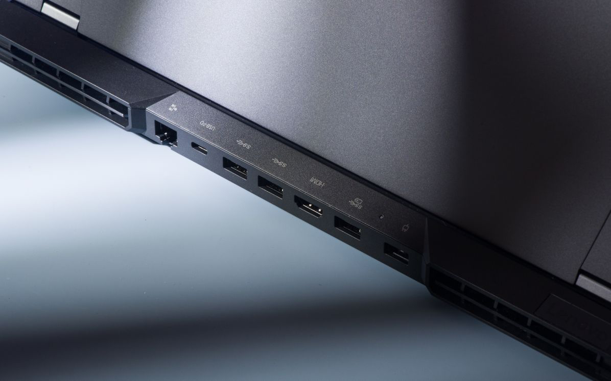
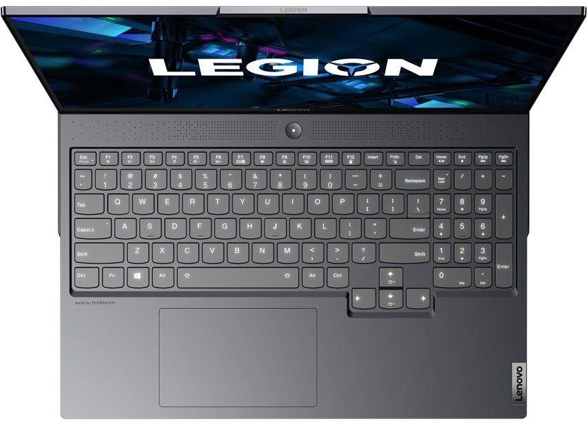
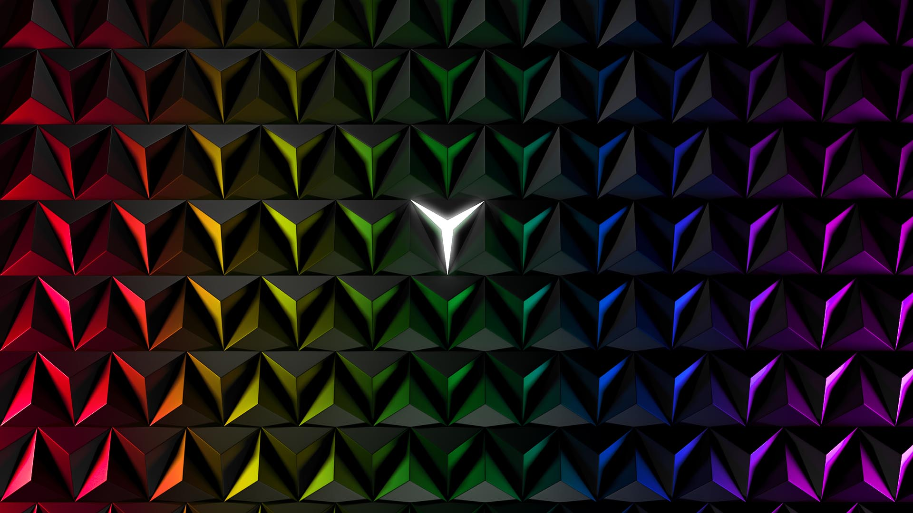

1. Игровой, но не игрушка
  Корпус ноутбука выполнен из алюминия, толщина устройства не превышает 2,7 см, а вес составляет 2,5 кг. Параметры аналогичны многим игровым флагманам в этом ценовом диапазоне. Лэптоп можно открыть одной рукой — спасибо грамотному распределению веса. Нижняя часть со всей начинкой весит довольно много, а верхняя — мало. На боковой грани есть отдельная механическая кнопка, отвечающая за работу вебки. Достаточно сдвинуть её — и камера полностью отключится. Такое решение понравится ценителям приватности.
Задняя часть Legion 5 Pro напоминает встроенную док-станцию. На ней разместили целую россыпь портов и дополнительные решётки радиаторов для более эффективного охлаждения системы. Материалы корпуса, жёсткость конструкции, подгонка деталей, эргономика — всё на высшем уровне, как и полагается ноутбуку такого класса. Конечно, это не ультрабук, который легко весь день носить с собой, однако масса и габариты новинки компенсируются серьёзной производительностью.
Если обычные Legion 5 оформлены лаконично и строго, то Pro-версия чуть больше акцентирует внимание на геймерской породе. Спокойный дизайн корпуса сочетается со светящимся логотипом серии и мощными решётками системы охлаждения. Сдержанный серый цвет крышки хорошо скрывает следы от пальцев.
2. Клавиатура и разъёмы
Порадовало обилие портов: четыре USB-A 3.2 Gen 1, пара USB-C 3.2 Gen 2, один из которых поддерживает зарядку мощностью до 100 Вт, вход для проводной сети, гибридный для гарнитуры, HDMI и проприетарный разъём питания.
Клавиатура имеет небольшой ход, кнопки нажимаются удобно и не стучат. Есть цифровой блок со стандартной раскладкой. RGB-подсветка равномерная, доступны две градации яркости. Фирменная утилита Lenovo Vantage позволяет тонко настроить цвета и различные эффекты для четырёх зон. Тачпад соответствует трендам: крупный и комфортный. Им можно пользоваться, если под рукой нет мышки. Не хватает только дактилоскопического сенсора, который всё ещё редко встречается в геймерских аппаратах.
3. Технические характеристики
- ПРОЦЕССОР - AMD Ryzen 7 5800H 8 ядер, 3,2 — 4,4 ГГц
- ВИДЕОКАРТА - NVIDIA GeForce RTX 3070 для ноутбуков, 8 ГБ
- ОПЕРАТИВНАЯ ПАМЯТЬ - 32 ГБ LPDDR4, 3200 МГц
- НАКОПИТЕЛЬ - 1024 ГБ NVMe PCIe 3.0, M.2
- ДИСПЛЕЙ - 16-дюймовый дисплей VESA DIsplayHDR™ стандарта QHD (2560 на 1600) с матрицей IPS, соотношение сторон 16:10, частота обновления 165 Гц, время отклика 3 мс, покрытие цветового пространства sRGB 100 %, поддержка технологий Dolby Vision™, NVIDIA® G-Sync™ и AMD Freesync™, яркость 500 нит
- ПОРТЫ - Порт USB Type-C (порт USB 3.2 Gen 2, разъем DisplayPort™ 1.4), Комбинированный разъем для микрофона и наушников. Порт USB-A 3.2 Gen 1, Рычажок отключения веб-камеры. 3 порта USB Type-А 3.2 Gen 1 (один поддерживает зарядку устройств, ток до 2А). Порт USB Type-C (порт USB 3.2 Gen 2, разъем DisplayPort™ 1.4, Power Delivery до 100Вт), Разъем HDMI 2.1, Разъем RJ45,Входной разъем питания. Скорость передачи данных через порт USB зависит от множества факторов, в том числе от вычислительных мощностей основного и периферийных устройств, атрибутов файлов, конфигурации системы и операционной среды; фактическая скорость будет отличаться и может быть меньше ожидаемой.
- БЕСПРОВОДНЫЕ ИНТЕРФЕЙСЫ - Wi-Fi 6.0 802.11ax, Bluetooth 5.1
- АКБ И ЗАРЯДНОЕ УСТРОЙСТВО - аккумулятор Li-Pol, 80 Втч, сетевой адаптер на 300 Вт
- РАЗМЕРЫ И ВЕС - 35,6 x 26,4 x 2,7 cм / 2,5 кг
- ОПЕРАЦИОННАЯ СИСТЕМА - Windows 10 Pro (в максимальной комплектации)
4. Итоги
Legion 5 Pro подкупает топовыми характеристиками и вниманием к деталям. Мощная видеокарта позволяет запускать большинство игр на максималках, а красочный 2,5К-дисплей отрисовывает плавную и чёткую картинку. При этом видно, что ноутбук создавали инженеры, а не маркетологи. Комплектующие выбраны не самые дорогие, но вендор, благодаря продуманной системе охлаждения, выжал из них максимум производительности. Также отметим широкий набор портов и приличную автономность. Lenovo Legion 5 Pro — один из лучших игровых лэптопов в своём классе, поэтому однозначно заслуживает внимания.